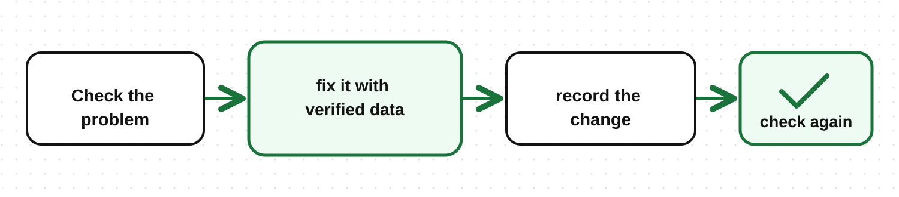

In the previous lesson, we collected rice sales data for July and August. Now we prepare that data so branches can be compared correctly.
Data cleaning means fixing errors, handling missing values, and making data formats consistent.
In the data quality lesson, you learned how to recognize problems. Here, you learn what to do about them.
Keep the original data, work on a copy, and write down the changes you make and why you made them.
| Problem | What to check | Action |
|---|---|---|
| Duplicate rows | Is the same record entered twice, or are they different sales? | Remove the extra copy after the duplicate is confirmed |
| Missing value | Can it be found in the original record? | Fill it with verified data; if not, mark it as missing |
| Different spellings | Are different names referring to the same branch? | Use one agreed name |
| Different date formats | Are the day, month, and year clear? | Convert to one format after the date meaning is confirmed |
| Different units | Do you know how to convert them to one unit? | Convert to kg after the weight is verified |
| Suspicious value | Is it an entry mistake, or does it have a real explanation? | Check the source and correct it if an error is confirmed |
The same customer buying twice is not a duplicate error. A very large number also does not prove there is an error by itself.
Part of the collected data looks like this. In this example, each row should be one rice sale, and each sale has its own sale ID.
| Sale ID | Date | Branch | Amount | Unit |
|---|---|---|---|---|
| B-101 | 2026-07-05 | Hodan | 50 | kg |
| B-101 | 2026-07-05 | Hodan | 50 | kg |
| B-102 | 2026-07-06 | hodan | 2 | sacks |
| B-103 | 2026-08-03 | 25 | kg |
Check B-101: If the original record confirms it is one sale entered twice, remove one row. If both rows are counted, that sale becomes 100 kg instead of 50 kg.
Standardize the branch name: After confirming that hodan and Hodan are the same branch, write both as Hodan.
Verify the sack weight: If each sack in sale B-102 is 50 kg, convert two sacks to 100 kg. Do not guess the weight without checking.
Find the branch for B-103: Check the original record or the person who entered the data. Do not guess the branch name.
Do not automatically turn a missing value into zero. A missing sales amount and zero sales are not the same thing.
If the branch for B-103 cannot be found, mark it as “Unknown branch”. The 25 kg can be included in total sales, but it cannot be assigned to a specific branch.
When sharing the result, explain that one sale has an unknown branch, and that this limits the branch comparison.
Review that confirmed duplicates were removed, names use one format, and numbers being added together use the same unit.
Compare the original data with the cleaned data so you can explain what changed.

If data cannot be fixed, explain the limitation before moving to analysis.